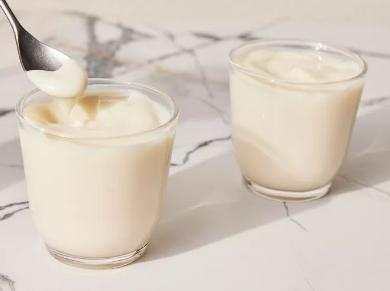

Pudding Recipe

Description
This homemade pudding with vanilla is a rich and delectable dessert.
Ingredients
- Milk: This recipe starts with two cups of milk heated on the stove.
- Sugar: Sweeten the pudding with ½ cup of white sugar.
- Cornstarch: Three tablespoons of cornstarch thickens the vanilla pudding.
- Salt: A pinch of salt enhances the flavor, but it won’t make the pudding taste salty.
- Vanilla: Of course, you’ll need vanilla extract!
- Butter: A tablespoon of butter takes the rich vanilla pudding up a notch.
Steps
- Heat the milk until bubbles form at the edges.
- Mix the sugar, cornstarch, and salt together in a small bowl.
- Add the sugar mixture to the milk, a little at a time, stirring until thick.
- Remove the pudding from the heat, then stir in the butter and vanilla.